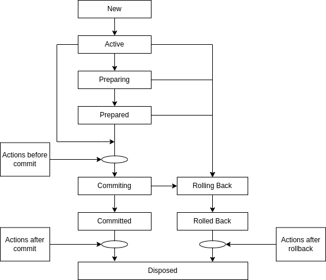
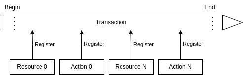

Транзакции в ECOS
В ECOS реализованы транзакции на базе двухфазного коммита.
Описание сущностей:
Транзакционный ресурс - ресурс, который поддерживает работу с транзакциями (например - база данных);
Транзакционное действие - действие, которое привязывается к жизненному циклу транзакции и выполняется в одном из трех случаев - перед коммитом, после коммита, после отката транзакции;
Транзакция - сущность, в рамках которой можно регистрировать транзакционные ресурсы и действия. Если в ходе транзакции поисходит ошибка, то транзакция откатывается и система возвращается к состоянию до начала транзакции;
Транзакционный менеджер - менеджер, который управляет транзакциями.
Жизненный цикл транзакции:
{kind=link}
Общая схема работы:
{kind=link}
Текстовое описание:
Транзакция начинается.
В ходе работы идет работа с ресурсами, которые регистрируются в транзакции
Так же в ходе работы возникают действия, которые нужно выполнить перед коммитом, после коммита или после ролбэка.
Перед коммитом выполняются все транзакционные действия, которые зарегистрировались в транзакции
Перед коммитом проверяется количество ресурсов. Если ресурс один, то выполняется однофазный коммит. Если ресурсов несколько, то выполняется подготовка к коммиту и коммит подготовленной транзакции.
После коммита выполняются все транзакционные действия, которые зарегистрировались в транзакции
Если что-то пошло не так в ходе транзакции, то все ресурсы откатываются к исходногому состоянию и выполнятются действия после ролбэка, кторые успели зарегистироваться в ходе транзакции.
Работа с транзакциями в котлин коде:
val result = TxnContext.doInTxn {
"выполняем нужные действия и возвращаем результат"
}
Работа с транзакциями в java коде:
String result = TxnContext.doInTxnJ(() -> {
return "выполняем нужные действия и возвращаем результат";
});
Данные методы создают транзакцию? если её нет или используют существующую. Если требуется принудительно выполнить действие в новой транзакции, то следует использовать методы doInNewTxn и doInNewTxnJ соответственно.
Для Records API транзакции запускаются автоматически в момент, когда к нам приходит запрос извне нашего приложения.